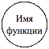
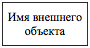
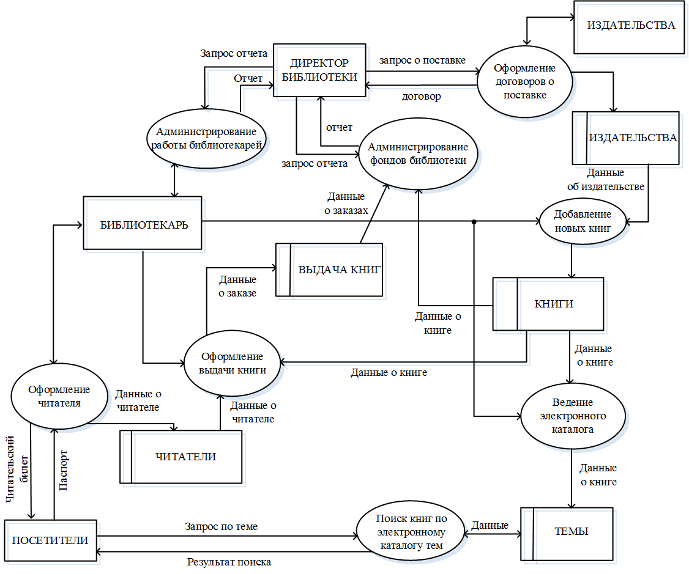

Объекты MS Access. Основными объектами БД являются таблицы, в которых хранятся данные.
Реляционная БД может иметь много взаимосвязанных таблиц, каждая из которых
содержит информацию об объектах определенного типа. Строка таблицы содержит
данные об одном объекте (например, товаре, клиенте), а столбцы таблицы (атрибуты)
описывают различные характеристики этих объектов (например, наименование, код
товара, сведения о клиенте). Записи, т. е. строки таблицы, имеют одинаковую
структуру – они состоят из полей, хранящих атрибуты объекта. Каждое поле,
т. е. столбец, описывает только одну характеристику объекта и имеет строго
определенный тип данных. Все записи имеют одни и те же поля, только в них
отображаются различные информационные свойства объекта.
Запрос – это объект БД, который
служит для извлечения данных из таблиц и предоставления их пользователю в
удобном виде. Особенность запросов состоит в том, что они черпают данные из
базовых таблиц и создают на их основе временную таблицу. Применение запросов
позволяет избежать дублирования данных в таблицах и обеспечивает максимальную
гибкость при поиске и отображении данных в БД. С помощью запросов данные
упорядочивают, фильтруют, отбирают, изменяют, объединяют, удаляют, т.е.
обрабатывают.
Форма – это объект БД,
предназначенный для ввода и отображения информации. Формы позволяют выполнить
проверку корректности данных при вводе, проводить вычисления, обеспечивают
доступ к данным в связанных таблицах с помощью подчиненных форм.
Отчет – это объект БД, который
предназначен для вывода информации из БД, прежде всего на принтер. Отчеты
позволяют выбрать из таблиц нужную пользователю информацию, оформить ее в виде
документа, перед выводом на печать просмотреть на экране. Источником данных для
отчета может служить таблица или запрос. Кроме данных, полученных из таблиц, в
отчете могут отображаться вычисляемые поля, например, итоговые суммы.
Макросы – это макрокоманды.
Если какие-то операции с базой производятся особенно часто, имеет смысл
сгруппировать несколько команд в один макрос и назначить его выделенной
комбинации клавиш.
Модули – это программные
процедуры, написанные на языке VBA. Если стандартных средств MS Access не хватает
для удовлетворения требований заказчика, программист может расширить
возможности системы, написав для этого необходимые модули или используя
готовые.
Режимы работы с MS Access. С организационной точки зрения в работе с любой БД есть два разных
режима: проектировочный и эксплуатационный (пользовательский). В
проектировочном режиме владелец схемы БД имеет право создавать в ней новые
объекты (например, таблицы), задавать их структуру, менять свойства полей,
устанавливать необходимые связи. Он работает со структурой базы и, как правило,
имеет полный доступ к базе. У одной базы может быть один, два или несколько
владельцев - разработчиков. Пользователи базы наполняют ее информацией с
помощью форм, обрабатывают и отбирают данные с помощью запросов и получает
результаты в виде отчетов. У одной БД могут быть миллионы пользователей, и,
конечно, доступ к структуре базы для них закрыт.
При работе с объектами MS Access можно выполнять следующие действия:
1. Открыть выбранный объект для просмотра.
Если это таблица, то ее можно просмотреть, внести новые записи или изменить те,
что были внесены ранее.
2. Открыть выбранный объект в режиме
конструктора. Если это таблица, в нее можно вводить новые поля или изменять
свойства существующих. Если это форма, в ней можно изменять или создавать
элементы управления.
3. Создать новый объект БД. Таблицы,
запросы, формы и отчеты можно создавать разными способами:
– автоматически;
– вручную с помощью Конструктора;
– вручную с помощью Мастера.
Создание диаграммы предметной
области. Прежде чем приступать к
созданию БД, разработчик должен сформировать понятия о предметах, фактах и событиях,
которыми будет оперировать проектируемая система.
В теории проектирования
информационных систем предметную область принято рассматривать в виде трех представлений:
1) как она реально существует;
2) как ее воспринимает человек
(проектировщик базы данных);
3) как она может быть описана с помощью
символов.
Эти представления определили и три
основных этапа проектирования БД. Первым этапом
проектирования любой БД является концептуальное
проектирование.
Концептуальное проектирование включает сбор, анализ и
редактирование требований к данным. Для этого осуществляются следующие
мероприятия:
- обследование предметной области,
изучение информационной структуры объекта;
- выявление всех фрагментов реальности,
каждый из которых характеризуется пользовательским представлением,
информационными объектами и связями между ними, происходящими в них или над
ними процессами;
- моделирование и интеграция всех
представлений.
Под предметной областью в
этом случае понимают часть реального мира, подлежащую изучению с целью организации
управления и, в конечном счете, создания информационной системы.
Можно выделить два способа разработки концептуальной модели
– это создание диаграммы потоков данных и разработка модели
«сущность-связь».
Вторым
этапом является логическое
проектирование – преобразование концептуальных или семантических
требований к данным в конкретные логические структуры данных. На этом этапе
часто моделируют базы данных применительно к различным СУБД и проводят
сравнительный анализ моделей.
Третий этап – физическое проектирование –
определение особенностей хранения данных, методов доступа и т.д.
Построение диаграммы
потоков данных. Диаграмма потоков данных
(DFD – Data Flow Diagramm) предназначена для представления семантики
предметной области на самом высоком уровне абстракции. Это означает, что
устранена или минимизирована необходимость использовать понятия «низкого
уровня», связанные со спецификой физического представления и хранения данных.
Диаграммы потоков данных
строятся из следующих элементов, представленных в табл. 1.
Таблица 1
Условные обозначения нотации Йордана –
Де Марко
|
Элемент |
Описание |
Обозначение |
|
Функция |
Действие, выполняемое моделируемой
системой |
 |
|
Поток данных |
Объект, над которым выполняется
действие. Может быть информационным (логическим) или управляющим.
(Управляющие потоки обозначаются пунктирной линией со стрелкой) |
|
|
Хранилище данных |
Структура для хранения информационных
объектов |
|
|
Внешняя сущность |
Внешний по отношению к системе
объект, обменивающийся с нею потоками данных |
 |
Такой тип обозначений
элементов DFD получил название «нотации Йордана – Де Марко», по именам
разработавших его специалистов.
Функции, хранилища и
внешние сущности на диаграмме потоков данных связываются дугами, представляющими
потоки данных. Дуги могут разветвляться или сливаться, что означает
соответственно разделение потока данных на части либо слияние объектов. При
интерпретации диаграммы используются следующие правила:
1. Функции преобразуют входящие потоки данных в выходящие.
2. Хранилища данных не изменяют потоки
данных, а служат только для хранения поступающих объектов.
3. Преобразования потоков данных во
внешних сущностях игнорируются.
4. Хранилища данных и внешние сущности
не могут быть связаны напрямую, только через функцию. То же касается связей
между двумя хранилищами или двумя внешними сущностями.
Помимо этого, для каждого
информационного потока и хранилища определяются связанные с ними элементы
данных, продумываются возможные ограничения. Каждому элементу данных
присваивается имя, также для него может быть указан тип данных и формат. Эта
информация является исходной при построении модели «сущность-связь». При этом,
как правило, информационные хранилища преобразуются в сущности новой диаграммы,
проектировщику остается только решить вопрос с использованием элементов данных,
не связанных с хранилищами.
Помимо нотации Йордана – Де Марко
для элементов DFD могут использоваться и другие условные обозначения (OMT,
SSADM, нотации Гейна
– Сарсона и т.д.). Все они обладают
практически одинаковой функциональностью и различаются лишь в деталях.
В качестве примера
приведена диаграмма работы библиотеки (рис. 1). Эта диаграмма представляет
верхний уровень концептуальной модели, так называемую контекстную диаграмму.
Уточнение модели производится путем детализации необходимых функций и хранилищ
контекстной диаграммы на DFD следующего уровня.
1. Запустить MS Access, ознакомиться с его функциональными
возможностями, внешним видом окна создания компонентов новой БД. Запустить из меню
Справка учебную БД «Борей» или
создать БД «Проекты» при помощи локального шаблона. Ознакомиться со структурой
и содержимым полученных примеров БД.
2. Ознакомиться со структурой и содержимым полученных примеров БД. При этом освоить
основные пункты меню и иконки для работы с MS Access,
приобрести навыки работы с окном БД: научиться просматривать объекты БД в
различных режимах работы, познакомиться с окном схемы данных, редактором VBA.
3. Получить номер варианта индивидуального задания (у заочников вариант
соответствует номеру зачетной книжки). Варианты заданий приведены в Приложении
1. Изучить
предметную область и в отчете сформулировать основные цели и задачи
проектирования БД, ограничения на данные, которые предполагается хранить в БД
4. Выделить основные внешние объекты, хранилища, функции и потоки данных для разрабатываемой
модели БД. Создать диаграмму потоков данных в нотациях Йордана – Де Марко
для полученного варианта.

Рис.
1. Пример диаграммы потоков данных
1. Что понимают под предметной областью
разработки БД?
2. Почему анализ предметной области
считают самым важным этапом в проектировании БД?
3. Что такое диаграмма потоков данных,
для чего она используется?
4. Перечислить и объяснить назначение
основных нотаций Йордана - Де Марко.
5. Какие способы создания DFD, кроме
рассмотренного в лабораторной работе, известны?
6. Какие типичные ошибки возможны на
диаграммах потоков данных?
7. Что называют контекстной диаграммой?
8. Какие процессы сопровождают переход
от контекстной диаграммы к диаграммам более низкого уровня?
9. Какие основные объекты можно
создавать в СУБД MS Access?
10.
Что
называется шаблоном, как он используется для создания БД?